MAOAM: Unified Object & Material Selection with Vision-Language Models
1University of Wisconsin–Madison
2Adobe Research

Selection is a core operation in interactive image editing, enabling tasks such as composition or manipulation. Beyond objects, material-based selection is particularly valuable for tasks like re-texturing surfaces or consistently editing all instances of a specific material in a scene. However, existing VLM-based selection methods are largely object-centric and typically support only a single interaction modality, limiting their applicability in real editing workflows.
A key challenge is that material selection datasets with text annotations are unavailable. We therefore propose a scalable data generation pipeline: we collect real and synthetic images with material masks, then leverage VLMs to generate material descriptions with rich visual-semantic information. The resulting corpus contains ~104K dense material masks across three sources — RealMat (~49K hand-annotated Pexels images), SynMat (~55K Blender + Evermotion renders), and SAMa (~3.3K multi-view video frames) — each paired with six description variants ranging from terse 10-word labels to 50-word descriptions covering color, finish, geometry, and spatial context.
Using the generated data, we train MAOAM with a multi-task objective over click- and text-based selection, along with an auxiliary VQA task derived from the material descriptions to facilitate deeper material understanding. The resulting model selects objects or materials from clicks, text, or both, and generalizes across natural user queries — from terse phrases to long compositional descriptions.
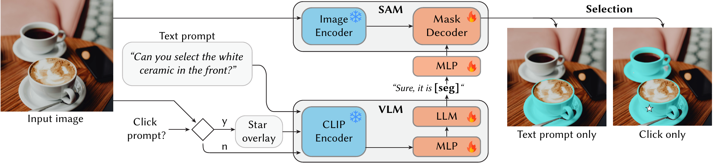
Given an input image, MAOAM takes a task prompt specifying the selection criteria (objects or materials) alongside a user prompt in click or
text. If a click is provided, stars are overlaid onto the image as visual cues. The VLM's CLIP encoder and projection layer encode the image
features into the language space. The LLM processes the features and produces a [SEG] token, which is projected via an MLP and
used as a prompt for the SAM-based mask decoder. We train with a multi-task objective over click-based selection, text-based selection, and
an auxiliary VQA task; blue denotes frozen and
red trainable parameters.
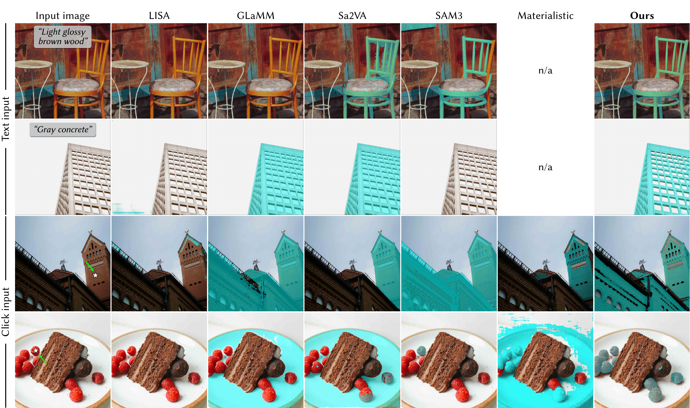
Click-based (first two rows) and text-based (last two rows) material selection against SAM3, Materialistic, LISA, GLaMM, and Sa2VA. LISA, GLaMM, and SAM3 occasionally produce empty masks when the selection criterion is too complicated or foreign to their vocabulary. Materialistic does not support text-based queries (denoted n/a).
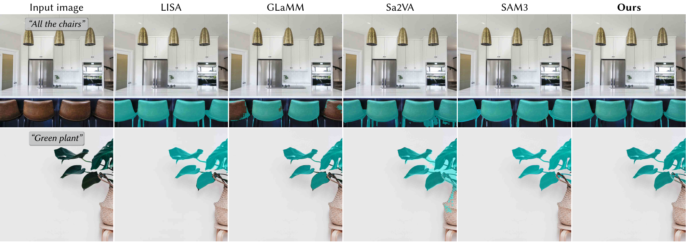
Object selection comparison. MAOAM performs on par with, and often better than, the strong object-centric baselines — reasoning about materials does not deteriorate object-level performance.
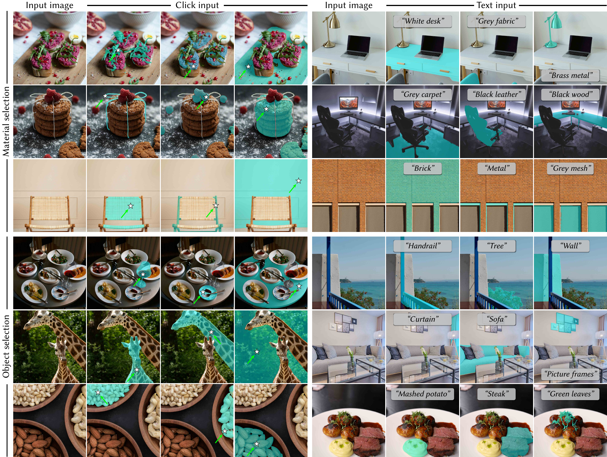
Additional examples of our method on material selection (first three rows) and object selection (last three rows). We show both click-based queries (first four columns) and prompt-based queries (last four columns).
| Method | Material — Text (mIoU) | Material — Click (mIoU) | ||||
|---|---|---|---|---|---|---|
| RealMat | SynMat | SAMa | RealMat | SynMat | SAMa | |
| SAM3 | 0.263 | 0.224 | 0.068 | 0.538 | 0.505 | 0.623 |
| Materialistic | — | — | — | 0.524 | 0.680 | 0.535 |
| LISA | 0.332 | 0.319 | 0.215 | 0.129 | 0.094 | 0.056 |
| GLaMM | 0.349 | 0.328 | 0.260 | 0.185 | 0.159 | 0.101 |
| Sa2VA | 0.473 | 0.431 | 0.471 | 0.260 | 0.242 | 0.378 |
| MAOAM | 0.740 | 0.608 | 0.685 | 0.808 | 0.766 | 0.747 |
MAOAM outperforms baselines by 67.5% avg mIoU over Sa2VA on text-based material selection, and 35.5% over Materialistic on click-based material selection.
| Method | RealMat | SynMat | SAMa | |||
|---|---|---|---|---|---|---|
| Q1 | Q2 | Q1 | Q2 | Q1 | Q2 | |
| Qwen2.5-VL-7B | 0.584 | 0.318 | 0.543 | 0.288 | 0.480 | 0.564 |
| Sa2VA | 0.484 | 0.311 | 0.510 | 0.305 | 0.380 | 0.432 |
| MAOAM | 0.858 | 0.974 | 0.795 | 0.979 | 0.749 | 0.858 |
4-way multiple-choice accuracy. Q1: distractors sampled from other regions. Q2: hard-negative mining (visually plausible paraphrases). MAOAM does better on Q2, suggesting fine-grained material understanding rather than surface pattern matching. Full numbers (RefCOCO, EntitySeg, ablations) in the paper.
A gallery of capabilities that emerge from our training recipe.
Material queries pick the relevant subset, object queries pick all instances, joint queries like "brown eggs" intersect both criteria — all from the same model.
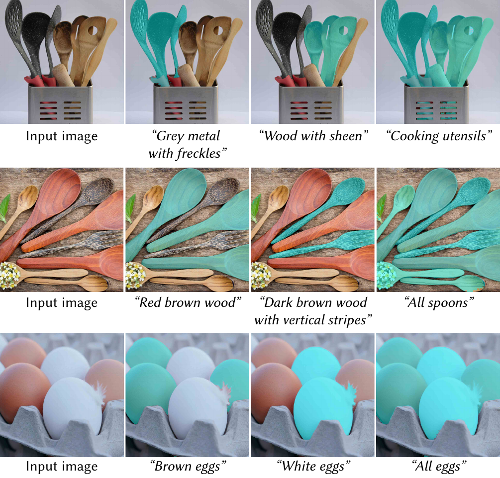
Training only ever sees one modality at a time, yet at inference the model combines them. Start with a text prompt, then layer on clicks to refine the selection — exactly how editors actually work.
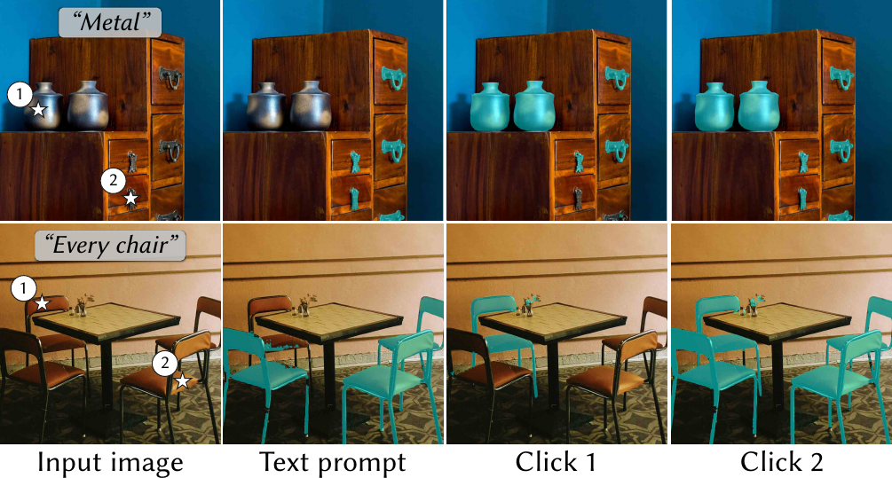
The same click yields different selections under different text prompts → pick the whole object, just one material, or a specific instance.
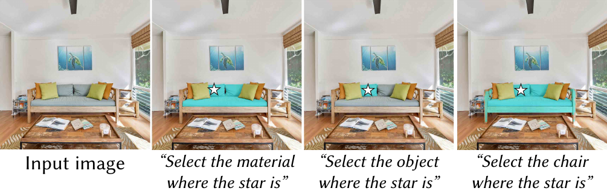
Because the generated descriptions include phrases like "above the table" or "on the left", MAOAM grounds spatial queries relative to other things in the scene.
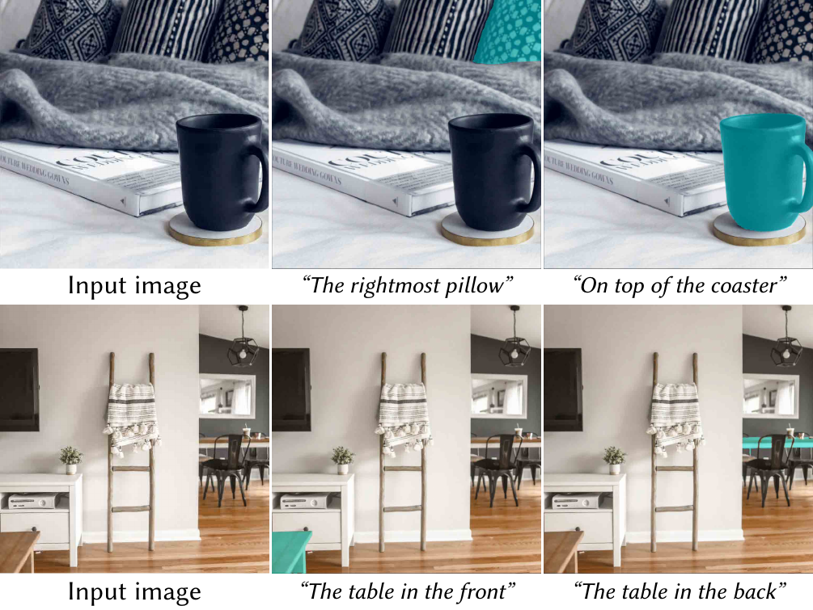
Selection masks from click- and text-based queries drop straight into editing pipelines — re-texture surfaces, swap one material for another, or push consistent appearance edits across a whole scene.
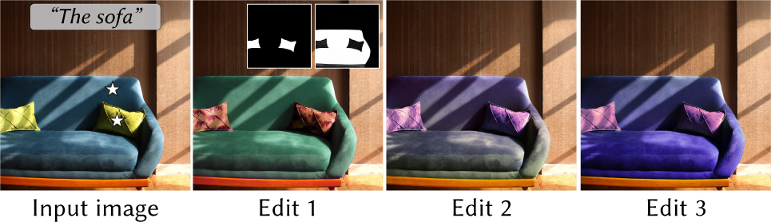
Crisp boundaries on intricate targets such as fences and insects — without the explicit refinement modules used by SAM-HQ. The vanilla SAM decoder is enough when the conditioning is right.
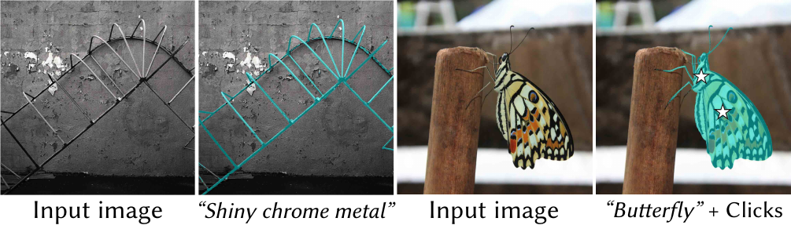
Two yellow objects, only one of them is plastic. MAOAM separates appearance from material — for both click and text prompts.
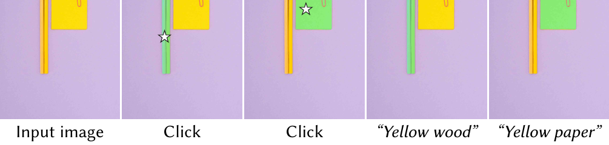
When a real star happens to be in the image, MAOAM still follows the user's click and ignores the natural one. With a text-only prompt "yellow star" (no click), it correctly segments the actual stars — the overlay convention does not confuse the model.
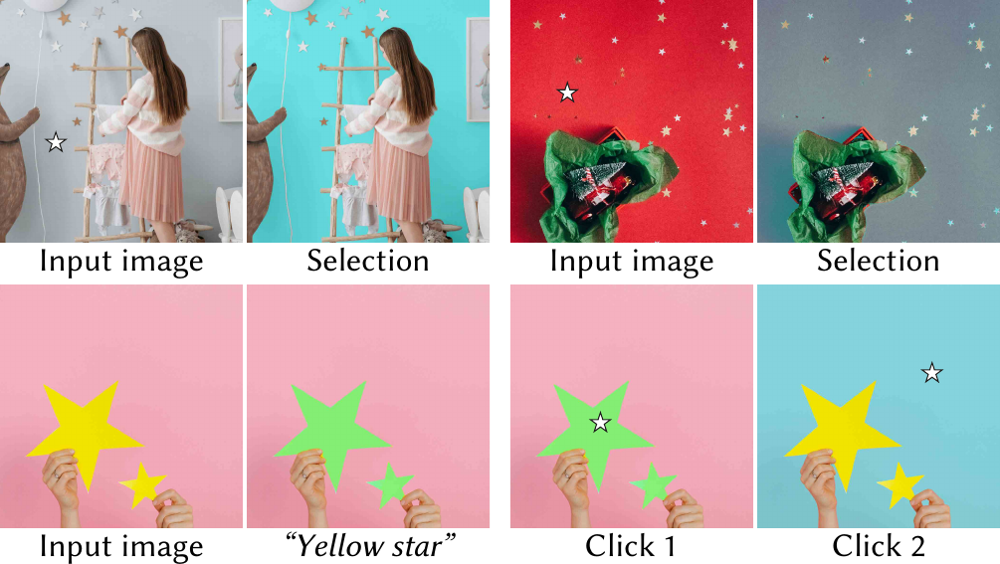
Training a unified selection model requires material datasets with dense mask annotations and rich text descriptions. Existing material datasets either lack textual descriptions, are available only as flat material maps, or are tied to a specific domain. To address this, we collect new material data with dense mask annotations and develop a VLM-based pipeline to generate detailed text descriptions.
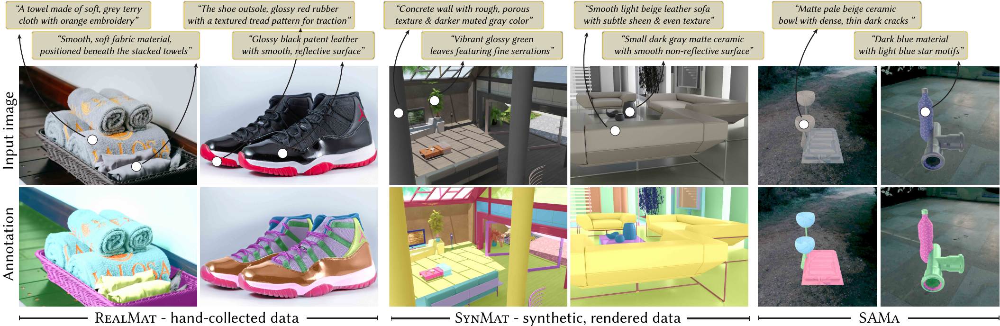
Example annotations. The second row shows dense, per-pixel material masks overlaid on the image, alongside two versions of our generated text descriptions: one including the object (top row) and one focusing on the material alone (bottom row).
We collect material mask data from both real and synthetic sources to capture natural diversity and precise, controlled annotations.
Human annotation provides high-quality labels but is prohibitively expensive at scale. We use Qwen3-VL-235B-A22B-Thinking with Set-of-Marks prompting to generate candidate annotations, then incorporate quality control through model-based verification and targeted human review.
For each marked region, we generate three types of descriptions: (i) a short material description paired with an entity label (e.g. "the white ceramic chair"); (ii) a short material description with spatial information, absolute ("bottom right corner") or relative ("above the table"); and (iii) a longer, self-contained material description that does not rely on context.
We sample 6 variants per region from 10 to 50 words. Model-based verification fixes incorrect grounding and instruction-following; manual filtering retains ~80% of the validation samples — 1,797 / 2,216 from RealMat, 2,458 / 3,072 from SynMat, and 258 / 352 from SAMa.
Training on VQA encourages fine-grained material understanding through reasoning in text. We formulate two variants of a 4-way multiple-choice task. Q1 samples distractors from other regions in the same image (or other images, if too few materials are present). Q2 introduces hard-negative mining: the answer's description is paraphrased into a visually plausible but incorrect alternative — e.g. "brown wood with dark streaks" → "horizontally grained light wood".
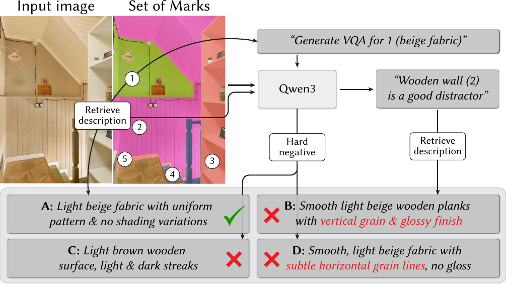
VQA generation with hard-negative mining. The VLM receives a Set-of-Marks-overlaid image (numbered circles) and paraphrases the material description for both the answer and the negative candidate to produce three distractors. Paraphrased parts are color-coded.
To train a unified model for both object- and material-level selection, we additionally incorporate publicly available object segmentation datasets: RefCOCO / RefCOCO+ / RefCOCOg for text-based object selection, and EntitySeg for click-based object selection. The combined corpus contains ~190K training samples at an approximate 1:1 ratio of material- to object-centric data, spanning diverse selection prompts and criteria.
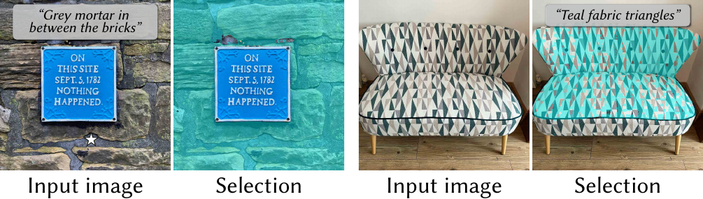
Two failure modes. Left: VLM reasoning — the model fails to distinguish mortar from bricks. Reasoning is bounded by the VLM backbone and may benefit from added test-time compute. Right: Mask decoding — the decoder fails on a coarse VLM image encoder, suggesting that adding refinement modules (e.g. ViTMatte) would improve fine-grained boundary quality.
This work was supported in part by NSF IIS-2404180 and the Institute of Information & Communications Technology Planning & Evaluation (IITP) grant funded by the Korea government (MSIT) (No. 2022-0-00871, Development of AI Autonomy and Knowledge Enhancement for AI Agent Collaboration). The authors thank Sudeep Katakol for his help in data generation, and Zijun Wei, Yash Savani, and Soochahn Lee for helpful discussions.
@inproceedings{park2026maoam,
title = {MAOAM: Unified Object and Material Selection with Vision-Language Models},
author = {Park, Jaden and Deschaintre, Valentin and Kuen, Jason and
Liu, Kangning and Georgiev, Iliyan and Singh, Krishna Kumar and
Lee, Yong Jae and Fischer, Michael},
booktitle = {ACM SIGGRAPH 2026 Conference Papers},
year = {2026},
publisher = {ACM},
doi = {10.1145/3799902.3811186},
}